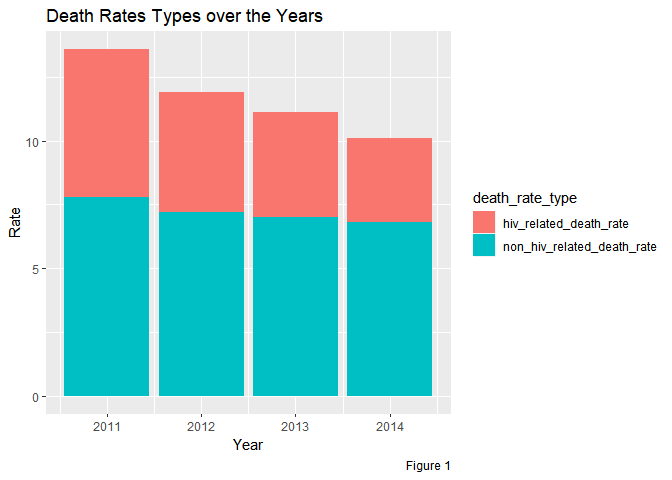

Final_Report
Noah Kreski(Ntk2109), Briana Lettsome(Bjl2150), Sunny Siddique (as5457), Bryce Wong (baw2160), David Yu (ky2288)
December 6th, 2018
Introduction
Methods
Data: Source, scraping method, cleaning, etc.
The data that was utilized for this project was the New York City Department of Health and Mntal Hygeine HIV/AIDS Surveillance Annual Report. The dataset was downloaded from NYCOpen Data, an open website that provides information and data to New Yorkers by the NYC government, an imported into R as a csv file. Within this particular datThe data contained within the dataset were collected between the years 2011 through 2016. The HIV/AIDS surveillance Annual Report contains eighteen variables, including year, age, race, HIV diagnoses, deaths, and percent viral suppression. The variables used within the visualizations are a followed:
Exploratory analysis
: Visualizations, summaries, and exploratory statistical analyses. Justify the steps you took, and show any major changes to your ideas.
Big Picture Visualizations
Subgroup Visualizations
hiv = hiv_data %>%
filter(borough == "All") %>%
select(year, race, hiv_diagnosis_rate, gender) %>%
filter(!race == "All")
hiv %>%
ggplot(aes(x = year, y = hiv_diagnosis_rate, color = race, group = race)) +
geom_line() +
facet_grid(~gender) +
labs(
title = "HIV Diagnosis Rates by Race",
x = "Year",
y = "HIV Diagnosis Rates",
caption = "Data from the NYCDOHMH"
)
In order to assess the HIV diagnosis rates by race, the ‘All’ observations within the borough variable was kept in the dataset (Figure 3). This was done to ensure that the output we sought was not confounded by results specific to each borough, but rather to all boroughs. The variables year, race, gender and HIV diagnosis rates were spepcifically selected for this analysis. Additonally, being that the race variable was being visually assessed, the ‘All’ observations within the variable was filtered out. We thought it would have been interesting to observe the differences in in HIV diagnosis rates by race and gender and, a such, the spaghetti plot was faceted by gender.
Figure 3 illustrates the HIV diagnosis rates by race and faceted by gender over time. It can be observed that, regardless of gender, Blacks have the highest numbers of diagnosis rates with Latinos/Hispanics having the second highest rates over the 6-year period. Furthermore, Asian/Pacific Islander appears to have the lowest numbers of HIV diagnosis rates. There is also an interesting peak observed among the race Other/Unknown observed in the year 2013, that cannot be explained. Additionally, there is also an observed decrease in the rates of HIV diagnosis rates in the Black and Other/Unknown raceson when not looking at differentiation by gender.
When visually assessing the plot by gender, males have a much higher HIV diagnosis rates compared to females. Looking more closely, the diagnosis rates of Black males are significantly larger compared to Black females with the same distinction being made in all races, though not as wide. In Black males and females, there is a decrease in IV diagnosis rates over time. There is also a slight decrease in the Latino/Hispanic population in females, but an increase in the males. Furthermore, while there is a decrease in HIV diagnosis rates within White and Asian/Pacific Islander males, in females, there appears to be no linear change over the 6-year period.
hiv_age =
hiv_data %>%
filter(age != "All", borough == "All", uhf == "All")
#HIV diag rate over time by age groups
hiv_age %>%
ggplot(aes(year, hiv_diagnosis_rate)) +
geom_line(aes(group = age, color = age)) +
facet_wrap(~gender) +
labs(
title = "HIV Diagnosis Rates Over Time by Age Group",
x = "Year",
y = "HIV Diagnosis Rates",
caption = "Figure 4. Data from the NYCDOHMH"
)
For “HIV Diagnosis Rate by Age and Gender” - The data was first filtered to obtain rows that only contained values for gender and age. Then HIV diagnosis rate over time was plotted as a line graph, grouped by age groups and colored accordingly. To see if the rate distribution among age groups differed by gender, the plot was faceted by gender as well. ##Results